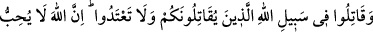
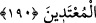
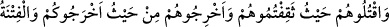
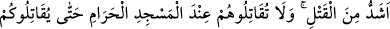
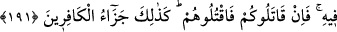

190. Size karşı savaş açanlara, siz de Allah yolunda savaş açın. Sakın aşırı
gitmeyin, çünkü Allah aşırıları sevmez.
Burada “Allah’ın yolu” ifâdesiyle “Allah’ın dîni” kastedilmiştir. Çünkü din, kulu
Allah’a ve onun rızâsına götüren bir yoldur. Sizinle savaşan Kureyşlilerle Allah
yolunda savaşın. Müslümanlara bu emir, kendilerine savaş açan tüm müşriklere ve
İslâm’ın yayılmasına engel olanlara karşı cihâd izni verilmeden önce gelmişti. Çünkü
bu, Medine’de nâzil olan ilk cihâd âyetidir. Bu âyet nâzil olduğunda Rasûlullah (s.a.)
yalnız kendisine savaş açanlarla savaşıyor, İslâm Dîni’nin yayılmasına karşı çıksalar
bile, bizzat savaş açmayanlara herhangi bir saldırıda bulunmuyordu. İbn Abbas
(r.a.)’dan gelen şu rivâyet bunu destekliyor:
“Bu âyet, Hudeybiye Anlaşması sırasında nâzil oldu. Nebî (s.a.) hicretin altıncı yılı
Zilkâde ayında umre yapmak maksadıyla 1400 ashâbıyla birlikte yola koyuldu. Mekke
yakınlarındaki sık ağaçlı, bol sulu Hudeybiye’ye geldiklerinde müşrikler,
müslümanların Kâbe’ye gitmesine engel oldular. Hz. Peygamber Hudeybiye’de bir ay
kaldı. Sonra Hz. Peygamber’e gelecek yıl Mekke’ye gelerek umre yapmak üzere bir
anlaşma teklif ettiler. Rasûlullah (s.a.), o yıl, müslümanların Kâbe ziyâretini
engellemelerine rağmen, müşriklerin şartlarını kabûl etti. Ashâb-ı kirâm, ertesi yıl kazâ
umresi için ânîden geldiklerinde, müşrikler verdikleri sözü tutmaz da onlarla savaşmak
zorunda kalırız, endişesine kapıldılar. Haram olan bir ayda ve haram bölgede savaşmak
istemediler. Bunun üzerine “Sizinle savaşanlarla Allah yolunda savaşın” âyeti nâzil
oldu.
Fakat, ihrâmlıyken Harem bölgesinde savaşı siz başlatarak haksız yere saldırmayın.
Çünkü Allah haksız yere saldıranlar hakkında hayır dilemez.
191. Onları (size karşı savaşanları) yakaladığınız yerde öldürün. Sizi çıkardıkları
yerden siz de onları çıkarın. Fitne, adam öldürmekten daha kötüdür. Mescid-i
Haram’da onlar sizinle savaşmadıkça, siz de onlarla savaşmayın. Eğer onlar size
karşı savaş açarlarsa siz de onları öldürün. İşte kâfirlerin cezâsı böyledir.
Daha önce müşrikler müslümanları Mekke’den çıkardıkları için, şimdi Allah Teâlâ
“Sizi çıkardıkları yerden siz de onları çıkarın!” buyurmaktadır. Bu yüzden Rasûlullah